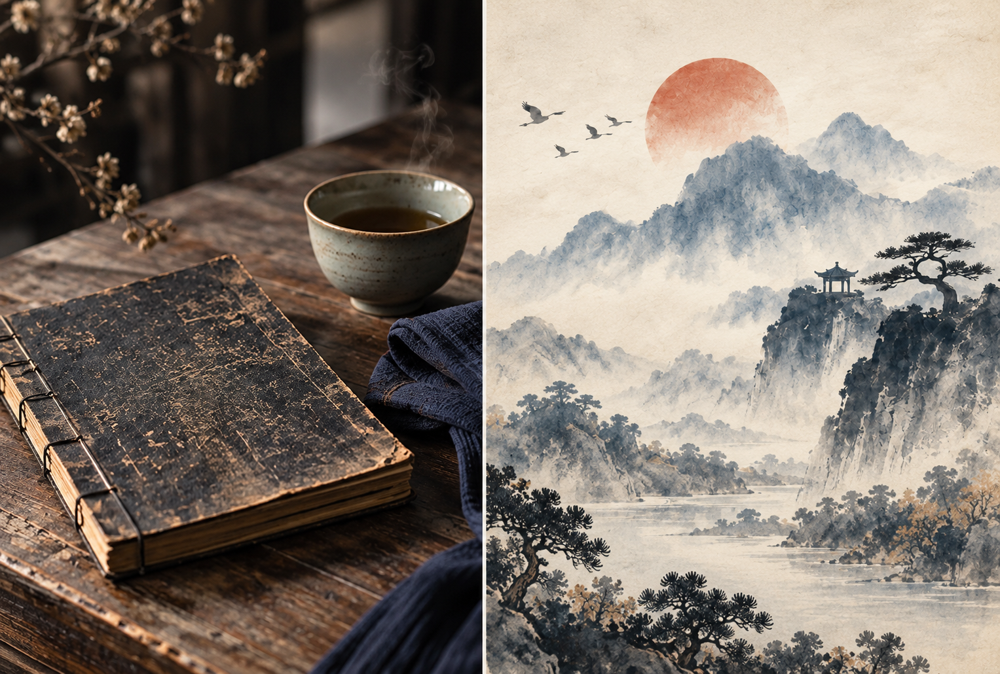
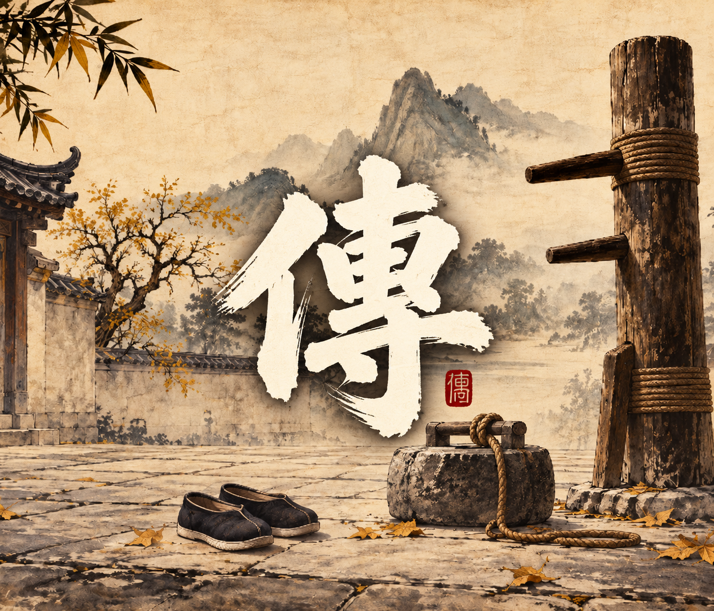
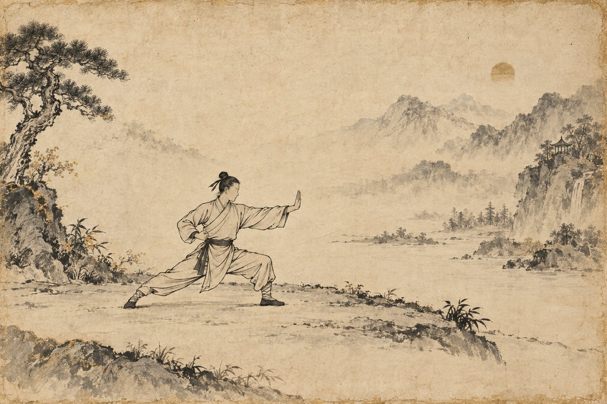
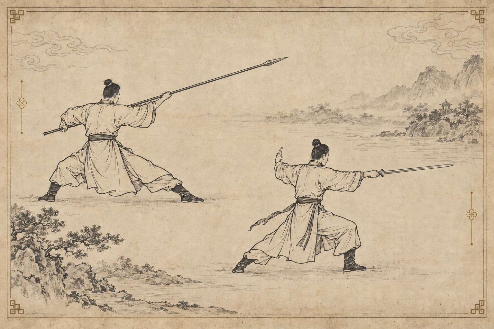

武
以正氣立身，以武德修心。
以基本功築基，以拳械磨藝。
讓更多人走近武術、理解武術，讓傳統在當代持續有人學、有人練、有人傳。
為何以「復興」為名
面對傳統武術技藝與武德精神逐漸式微，本會希望重新連結其文化價值與教育意義， 讓傳統武術不只被保存，更能在當代持續被理解、學習與實踐。
武術之所以值得傳承，不只因為招式與器械，更因為其中包含對身體的認識、 對分寸的掌握，以及對師友、群體與文化的責任。
外練其形・內養其心
一招一式，是身體的鍛鍊；一起一落，也是心性的照見。習武所求，不在炫技，而在知進退、守分寸、明責任。
正其身
從站立、呼吸與步法開始，在反覆習練中建立穩定與秩序。
定其心
動中求靜，快中有定；不躁進，也不失去判斷與節制。
承其責
尊重源流、珍惜所學，並以適當的方法傳給願意學習的下一代。


讓傳統，真正回到生活之中
從日常習練到公共推廣，讓傳統武術不只被保存，更能持續被理解、被實踐、被傳承。
傳承脈絡
從根本功法到武德文化，建立完整而可延續的學習與培育方向。
根本功法
樁、腿、步、身、勁力，重視扎實基礎與身體結構。
拳術傳承
以傳統拳術教學為核心，延續技法、身法與攻防理解。
兵器習練
劍、槍、刀、棍等傳統器械，講究法度、安全與文化脈絡。
武德文化
將禮儀、自律、責任與傳承意識融入日常習武。
術與德，並行而修
武術不只追求動作完成，也重視人的修養、責任與文化理解。
技藝求真
重視正確方法、基本功、身法與實際練習，讓傳承有所依據。
武德修身
以禮、自律、安全與責任作為學習的一部分，不使技術與品格分離。
人才培育
由學習、見習、協助到傳承，逐步建立下一代的責任與能力。
文化延續
透過講座、紀錄、交流及公益推廣，讓傳統武術在社會中持續發聲。
武學內蘊
形於外，而意存於內；以仿古圖譜呈現拳、器與傳承之間的精神脈絡。

